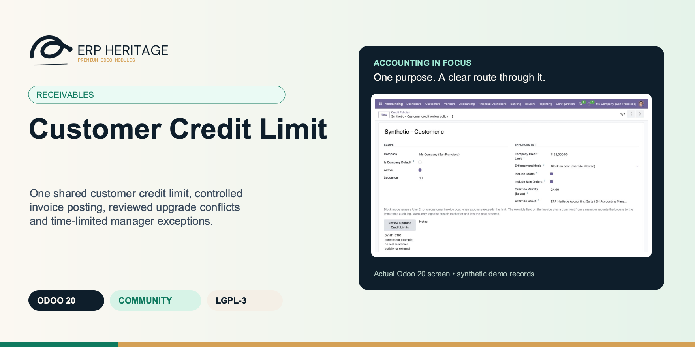
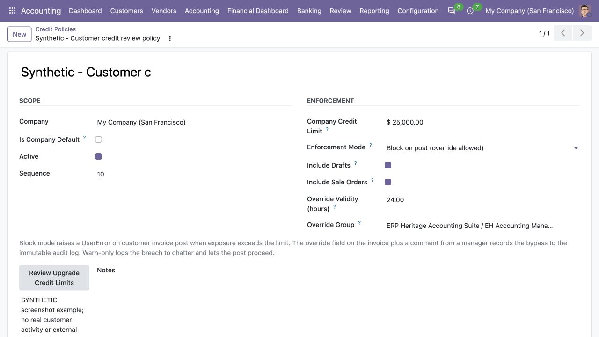
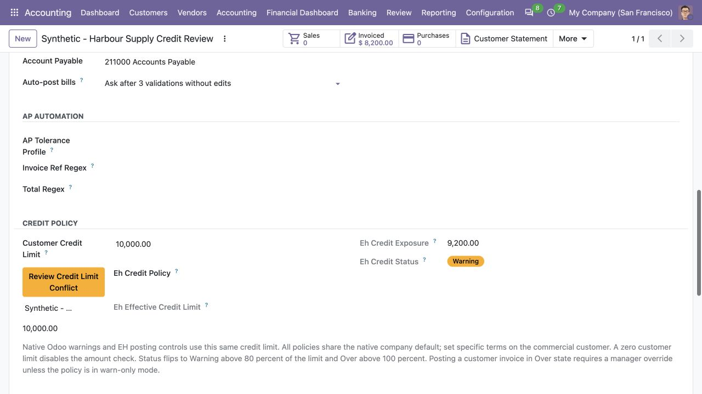
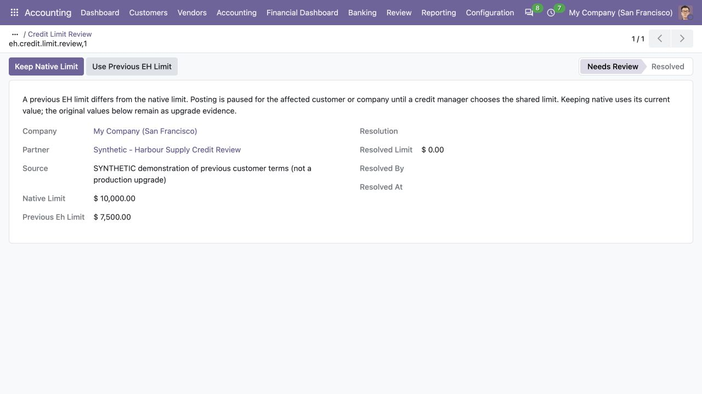

ERP HERITAGE / ODOO 20 COMMUNITY
One shared customer credit limit, controlled invoice posting, reviewed upgrade conflicts and time-limited manager exceptions.
LGPL-3 · Odoo 20 · v20.0.1.4.0 · Module guide, setup, workflows and rollout checks
The purpose
Use the same company-dependent customer credit amount throughout native Odoo and EH credit controls. This module adds a warn-or-block invoice-posting policy to that shared amount, combines customer exposure across the authorised accounting-branch scope, and records manager exceptions. The company default is shared by all enforcement policies. Upgrades preserve former EH terms and require a deliberate manager decision where native and EH amounts conflict.
Inside Odoo 20
Captured from Odoo 20 Community using synthetic demonstration records. Configuration screens show the available workflow; external service connectivity still requires the relevant provider setup and validation.

Synthetic credit policy uses the native company credit limit, includes configured exposure sources and requires managed overrides.
Captured 2026-09-22 from isolated Odoo 20 Community database with synthetic demonstration records. No external submission or live banking activity is represented.

Synthetic customer shows the native credit limit, current exposure, warning status and a credit-limit conflict review action.
Captured 2026-09-22 from isolated Odoo 20 Community database with synthetic demonstration records. No external submission or live banking activity is represented.

Synthetic conflict example compares the native and previous EH limits and offers explicit review choices while in Needs Review state.
Captured 2026-09-22 from isolated Odoo 20 Community database with synthetic demonstration records. No external submission or live banking activity is represented.
Inside this module
The native customer limit is the single stored authority. Editing the EH credit field updates that same amount; editing native credit settings is immediately reflected in the EH posting gate. Each company retains its own customer terms.
Company Credit Limit on every policy displays the same native company default. A customer-specific amount takes precedence. Policies choose enforcement and exposure rules without introducing a second competing default amount.
Block mode checks exposure and the proposed customer invoice against the effective limit using company-currency rounding. It locks the commercial customer before the final exposure decision. Warn mode records the breach and continues posting.
An authorised reviewer records a reason for the particular invoice. Changing the reviewed credit amount, policy inputs or invoice requires a fresh reason. The reviewer must still belong to the configured override group at posting.
Override Validity defaults to 24 hours. An expired reason must be reviewed and saved again before posting. A policy can set zero hours to disable time expiry where that matches the organisation’s review policy.
Previous customer and policy amounts are retained as read-only evidence. Different explicitly configured native and EH terms create a pending review instead of silently overwriting either business decision. A pending review pauses affected posting.
Managers choose Keep Native Limit or Use Previous EH Limit. The review retains both historical values, the resolved amount, reviewer and resolution time. Customer access and company scope still apply to the decision.
Exposure combines unpaid receivables and, when enabled, draft customer invoices and the uninvoiced portion of confirmed sales orders. Child contacts share their commercial customer’s control within the authorised branch scope.
Posted exceptions retain the acting user, time, exposure, limit, invoice amount, excess and reason. Override records cannot be deleted or quietly rewritten; a resolution comment remains available for later review.
EH Accounting Managers maintain customer credit amounts and enforcement policies. The native fields and the EH alias share these protections, while existing contact access and company permissions remain effective.
From input to outcome
Set the native company credit default and choose the company’s default enforcement policy. Decide whether draft invoices and uninvoiced sales commitments contribute to exposure. Review any customer-specific amounts in the correct company. For an upgraded database, open Review Upgrade Credit Limits from a policy and resolve pending company or customer conflicts before expecting affected invoices to post. Keep the commercial evidence for the chosen terms with the review.
Prepare a customer invoice and inspect the exposure warning before posting. Use one example below the limit and another that would exceed it. In block mode, posting refuses the excess until an authorised reviewer records a reason. In warn mode, the breach is recorded and posting continues. An explicit customer amount of zero disables the amount check; restoring the company default uses the native Partner Limit control. Pending upgrade reviews still require resolution.
Review the proposed exception on the specific invoice, including customer, company, amount, current limit and exposure. Save a clear reason through an authorised user. Post within the configured validity period; the default is 24 hours. If the invoice, amount authority or policy changes, or the reason expires, review it again. The reason author’s current group membership is checked at posting, and the completed exception keeps an append-only audit record.
Review recurring overrides and customer terms periodically. Changing the default on one policy changes the same company default displayed on every policy. Customer-specific amounts remain independent of that default until explicitly reset. Migrated assigned-policy amounts become customer terms, so archiving an enforcement policy does not erase them. Include accepted ordinary, blocked, expired and company-switch examples in the handover.
Business situations
Customer Credit Limit is relevant to credit managers and invoice-posting teams who need to answer this question: Should this customer’s additional receivable exposure be accepted under the company’s credit policy? Start with the process that creates the decision, identify its owner and agree what evidence the reviewer needs. A narrow pilot helps the team evaluate the supported workflow using its own accounting data before broadening access.
Use the module’s receivables role as one part of a controlled close. Bring the relevant company policy, customer credit limit, open exposure, proposed invoice and override reason to the review, then explain the result alongside the business event it represents. Establish which outputs become part of the reporting pack and which outstanding matters need a separate accounting decision.
Turn the business question into an acceptance case: Should this customer’s additional receivable exposure be accepted under the company’s credit policy? Use one ordinary example and one relevant exception from the supported scope below. Ask the intended operator to prepare it and the reviewer to explain the result. Retain that accepted example with the deployment notes so future changes can be assessed against an understood process.
Before the first result
Confirm that the organisation needs the supported receivables process described here. Identify the responsible credit managers and invoice-posting teams and write down the decision they expect the module to support. Use the limitations section to separate shipped behaviour from an integration, professional judgement or operational service that needs another owner.
Prepare company policy, customer credit limit, open exposure, proposed invoice and override reason. Check the relevant records in the intended company and use dates that match the business event. Resolve missing accounting configuration before evaluating calculated output; plausible-looking totals do not establish that the chosen inputs or policies are correct.
This module declares Accounting Suite Base as part of its installation foundation. Its direct standard-Odoo dependencies are account. Review the actual dependency set in the target database before a rollout, especially where another addon also extends the same accounting models, menus or posting actions.
Define who operates Customer Credit Limit, who reviews unusual results and who maintains configuration. Run the representative workflow below in a test database using the intended users. Confirm that users can reach the work they own and that the reviewer understands the available evidence before moving the process into live operation.
Identify native customer amounts, the native company default, former EH customer values and any assigned-policy amounts. The migration carries unambiguous former terms forward and preserves conflicts for manager review. Arrange for an authorised manager to review the affected company and customers after the upgrade; unresolved reviews deliberately pause their posting workflow.
Agree how long an invoice-specific reason remains valid. The shipped policy default is 24 hours, and zero disables expiry. Test the selected window alongside role revocation and a changed customer amount. This sets the lifetime of a saved exception, not a separate customer-wide approval or credit-insurance decision.
Workflow reference
Select a default enforcement policy for each company. All its policies display the same native company credit default. A policy chooses warn or block mode, optional draft and confirmed-order exposure, the permitted override group and the exception validity period. Set individual commercial terms on the customer in the relevant company. Child contacts share their commercial customer’s control. Replacing or archiving a policy changes enforcement ownership, not the authoritative customer amount.
When a customer invoice (customer invoice or customer credit note) posts, the gate computes the commercial customer's exposure across the complete actor-authorised accounting-branch scope and compares it against the effective limit using company-currency rounding. Block mode serialises that decision on the commercial-customer row. A breach raises a clear error naming exposure, limit, and excess until a manager records an override reason on that specific invoice. Warn mode logs the breach and proceeds without the blocking lock.
Every override writes one row to an append-only log capturing user, timestamp, exposure, limit, move amount, excess, and reason. The log model refuses write to anything but the comment and refuses unlink, so the record of who waved a customer through, and why, cannot be quietly edited away. The override is per invoice: blessing one move does not bless the next.
Reason for overriding the customer credit limit on this specific invoice. Setting this field is a positive act: the gate sees it as 'manager has explicitly accepted this excess' and records the override before posting.
The saved review covers the customer, company, currency, dates, amount and invoice lines, together with the effective credit amount and enforcement inputs. Posting refuses an old reason after those reviewed inputs change. The configured validity period and the reason author’s current permission are checked separately.
Live, non-blocking warning shown on a draft customer invoice when posting it would take the partner over its credit limit. The hard gate still runs at post time.
The selected company-default policy applies to customers without an enforcement-policy override. A company has one default policy, while other policies may define different exposure or override rules. Their displayed company credit default remains the same shared native amount.
Warn-only logs the breach to the move's chatter but does not block the post. Block raises a UserError unless an override has been recorded on the move.
When set, draft customer invoices count toward a partner's exposure alongside posted-and-unpaid invoices. Useful in shops where sales and accounting are different cohorts and drafts are a real commitment. Default off so the gate only considers what is posted.
When enabled, the not-yet-invoiced portion of confirmed sales orders contributes to exposure. For example, an order of 100,000 with 20,000 already invoiced contributes its remaining commitment to the exposure calculation. This influences the customer invoice posting gate; it does not add a sales-order confirmation gate. The option has no effect when Sales is not installed.
Group whose members can record an override on a move. Defaults to the EH Accounting Manager group; deployments that need a separate Credit Officer cohort point this at their own group.
Per-partner policy override. When set, takes precedence over the company default. Useful for known-risk customers that need stricter enforcement than the default policy applies.
Credit settings that need manager review: pre-company-scope settings of a shared partner, never applied automatically, and settings of partners that are no longer their own commercial customer, with what was carried over to this customer.
Sum of unpaid open AR plus, when the effective policy says so, draft customer invoices and not-yet-invoiced sale orders. Multi-currency lines are converted to the company currency at the rate captured on each document. Live; recomputes on every form load.
The native customer credit limit includes the native company default when no customer override exists. It is expressed in company currency to match exposure. An explicit zero disables the amount check. The EH field displays and edits this same native amount, so there is no second customer amount for users to reconcile.
OK: exposure under 80 percent of limit. Warning: between 80 and 100 percent. Over: above the limit. Disabled: no company policy in place.
Illustrative implementation exercise. A customer’s recorded exposure is near the company’s permitted limit and another invoice is ready to post. Inspect the configured policy, partner-specific limit and exposure used at the posting point. The operational question is whether this additional receivable should be accepted under that policy, not whether the customer’s order is commercially attractive. Exercise an allowed case and an over-limit case in a test database. Where a manager approves an exception, review its stated reason and link to the affected document. Include a later review of repeated overrides for the same customer so the organisation can decide whether its limit or collection policy needs attention.
Open the upgrade reviews from an authorised credit policy. Compare the retained native and previous EH values with the current commercial evidence. Keep Native Limit preserves the current native amount, including an authorised correction made during review; Use Previous EH Limit adopts the retained former value. Each decision retains the original comparison, resolved amount, actor and time. A customer with a pending conflict cannot be moved beneath a different commercial customer to avoid the review.
Before unification, a customer could receive its effective amount from an assigned EH policy. The upgrade turns those inherited commercial terms into a native customer amount where no explicit native conflict exists. That preserves the customer’s terms while separating them from enforcement settings. Later policy archiving therefore does not unexpectedly reset a migrated customer to the company default.
A Company Credit Limit edit on one policy changes the native company default seen on every policy. Customers without their own amount then follow that shared default. A customer-specific amount remains unchanged. The policy edit path permits the authorised EH manager to adjust this particular setting without granting general access to edit every company setting.
Create an invoice that exceeds the customer’s amount, have an authorised reviewer save a reason, and verify posting within the configured window. Then repeat with an expired reason, a changed customer amount and a reviewer whose permission has been removed. These are separate reasons to require a fresh review. Use the resulting accepted examples to train both invoice operators and credit reviewers.
Questions before rollout
It is designed for credit managers and invoice-posting teams. Its central business question is: Should this customer’s additional receivable exposure be accepted under the company’s credit policy? The listing describes the shipped operating scope and the decisions that remain with the organisation. Evaluate it against your own records and review process, rather than treating the module name as a promise to cover every scenario in that accounting area.
Have company policy, customer credit limit, open exposure, proposed invoice and override reason ready, together with the person who owns the related accounting policy. Set the company policy and review customer-specific limits before users encounter the invoice-posting gate. A known example makes it possible to check the result and resolve configuration questions before the process is repeated across more records or companies.
Where a manager grants an exception, retain the reason and review the override evidence with the customer’s account history. Keep the relevant source evidence with the output and be explicit about company, date and policy choices. The most useful review asks whether the result follows from the business inputs, not only whether the operation completed without a validation message.
It belongs to the receivables family. Its declared custom dependency foundation is Accounting Suite Base. Installing the complete suite also brings other operating and specialist modules; using this focused module should be evaluated against its own dependency list and scope. Optional services still need their own configuration and agreement where applicable.
Review policy changes and repeat exceptions periodically; a limit controls the configured posting point and does not replace customer due diligence.
No. Customer Credit Limit provides the specific records, calculations or workflow described in this listing. The organisation remains responsible for its source information, accounting choices, supporting evidence and review. Where the process uses an estimate, a contract assessment or an external service, appoint the appropriate owner before relying on the output.
No. The native company-dependent customer amount is authoritative, and the EH field is a writable alias. Every policy displays the same native company default. A customer can have a company-specific override, while the enforcement policy separately chooses warn or block behaviour and the included exposure components.
The migration preserves the configured native value and stores former EH terms as evidence. A pending Credit Limit Review pauses affected posting until a manager chooses Keep Native Limit or Use Previous EH Limit. A company-default conflict applies to the company; a customer conflict applies to that customer. Editing an amount alone does not dismiss the pending review.
An explicit numeric zero in the native or EH customer field disables the amount check. To restore the company default, use the native Partner Limit control. During a legacy create request only, a literal boolean False in the EH field remains an empty default for backward compatibility; it is distinct from an explicit numeric zero.
The policy controls Override Validity in hours, with 24 hours as the default and zero disabling expiry. Expired reasons need a fresh review. Relevant invoice, customer-limit or enforcement changes also require a new reason, and the reason author must still belong to the configured override group when the invoice posts.
Policies now share one company-default amount. Set different commercial terms directly on the customers concerned. During upgrade, an existing assigned policy’s former amount is retained as a customer term where it can be adopted unambiguously; a disagreement with an explicit native customer amount goes through conflict review.
Scope and requirements
The enforcement point is customer invoice or credit-note posting. Including confirmed sales commitments in exposure does not block sales-order confirmation.
Limits use the company currency. Customer due diligence, commercial decisions and review of repeated exceptions remain with the organisation.
An explicit customer amount of zero disables the amount check. Disabling the native warning-banner setting does not disable an active EH blocking policy.
Upgrade conflicts require a manager decision and pause affected posting until resolved; the migration does not silently choose between different configured terms.
Standards references describe the accounting subject addressed by the module. They do not establish certification, statutory filing acceptance or suitability for every jurisdiction. Your finance team owns its assumptions, accounting policies and review.
Installation scope
Odoo installs the following direct dependencies automatically. Additional dependencies can be brought in by those modules. Related modules in the wider catalogue are optional unless they appear in this dependency chain.
Shared reporting engine for the ERP Heritage Odoo 20 Community accounting suite, providing a reproducible report-execution audit log and a move-version result cache. Append-only audit log of every report render with user, timestamp, the full options snapshot, runtime, and a SHA-256 result hash for XLSX and PDF output, plus a multi-company analytic-aware parameterised SQL builder with no raw user input in SQL, a three-tier User/Manager/read-only Auditor privilege model, and a currency-aware XLSX writer. Odoo 20 Community accounting reporting engine, reproducible financial report audit trail, move-version report cache invalidation, multi-company parameterised SQL builder, append-only audit log, read-only auditor role, SHA-256 report hash compliance, currency-aware XLSX export, analytic-aware journal item aggregation.
Included dependency: eh_account_base. The shared reporting engine under the ERP Heritage accounting modules: an append-only render audit log, precise per-company cache invalidation, and a whitelist-only parameterised SQL builder.
Odoo Community dependency required by this module. Its own dependencies and configuration remain part of the installation scope.
Acceptance guide
The following are recommended rollout checks, not claims of additional built-in features. Apply the checks relevant to this module and retain evidence of your own results.
Select a recent, closed period that your finance team understands well. Keep its approved source documents, ledger totals and existing working papers available. Reproduce that period in a staging database before working on current transactions. A familiar period makes differences visible: you can distinguish an opening balance problem from a configuration choice, a timing difference or a genuine defect. Agree which person owns each discrepancy and what evidence will close it. Successful installation is the starting point; a repeatable business outcome is the acceptance criterion.
Write down the output your team needs from this module: a reviewed transaction, an exported file, a reconciled balance, an approved schedule or an operational queue. Identify who prepares it, who reviews it and who relies on it next. Make the scope concrete with one company, one reporting period and a small representative document set. Include an ordinary case and an exception. This keeps the evaluation focused on the business decision instead of the number of available screens, and gives reviewers a consistent way to compare the new workflow with their current process.
Use the Odoo 20 edition of the module and its dependencies together. The manifest defines what Odoo installs automatically; a feature mentioned elsewhere in the wider product family is not automatically included. Review the dependency guide on this page before enabling the complete suite, especially where your deployment also uses Sales, Purchase, Inventory or website components. Confirm that your hosting arrangement accepts custom server modules and their Python requirements. Keep a copy of the installed module versions with your acceptance record so a later update can be checked against the same baseline.
Check the companies, currencies, fiscal periods, journals, accounts and partner records used by your sample. Confirm that account purposes agree with your chart of accounts and that archived records are not being selected inadvertently. Review company-specific settings while the intended company is active. Where a workflow needs bank details, analytic dimensions, product information or payment terms, validate those inputs with their owner. Clean master data reduces repeated exceptions and makes it easier to investigate the exceptions that remain. Keep the preparation list short enough for someone else to repeat it.
Decide which source establishes the opening position before introducing new transactions. Save the source date, company, currency and supporting reconciliation. If a module maintains a schedule or a working-paper balance alongside the ledger, document how that opening amount should tie to the general ledger. Do not use balancing entries to hide a difference during the pilot. Classify the difference, correct its source and rerun the comparison. The resulting trail is useful both for your internal reviewer and for support if an unexpected calculation needs investigation.
Choose named users for preparation, review and administration. Confirm their practical access by signing in as those users in staging, rather than relying on an administrator's view of the menus. A visible menu does not replace model access or record restrictions, and a hidden menu does not by itself prove that data is protected. For your own acceptance check, verify the specific business operations each role needs. If your organization requires separation of duties, include that policy in the rollout criteria and check the actual workflow against it before granting production access.
Run the sample with the intended company selected, then repeat the relevant navigation and search checks as a user assigned to a different company. Record which company owns each source document and each generated result. For users who work across entities, confirm how their allowed-company selection affects totals and available records. Investigate any cross-company difference before it becomes a month-end problem. Group-level work and company-level work have different scopes; use the appropriate module and document the scope on the review evidence instead of assuming one screen represents both.
Include a company-currency case and, where relevant to the module, a foreign-currency case. Check the date used to select exchange rates and keep the rate source available to the reviewer. Add a transaction near a period boundary so the team can see whether document date, accounting date or another business date drives the result. Test decimal precision with a small amount as well as a large one. Record the expected rounding treatment. These checks turn vague differences in totals into questions that can be resolved against your accounting policy.
Choose one result and follow the available links or record references back to the original business document. Compare its company, partner, amount, currency and dates with the expected source. Where the workflow creates a journal entry, inspect the accounts and balancing lines before relying on an aggregate report. Where it exports a file, compare the file's records with the selected batch. Save a small, intelligible evidence set instead of an indiscriminate screenshot archive. A reviewer should be able to explain what happened without needing the original preparer beside them.
If this module creates or updates accounting entries, separate preparation from the decision to post in your operating procedure. Inspect the proposed outcome, resolve missing configuration and confirm the intended period before using a posting action. If the module does not post entries, identify the equivalent commitment point, such as sending a file or approving a review record. Record who is allowed to make that decision. The page describes the module's supported workflow; your team still needs an operating policy that fits its accounting responsibilities and approval structure.
From pilot to production
Use a deliberately incomplete sample in staging: a missing required setting, an unsuitable date or a source document that is not ready for the next step. Observe the actual message and the record state that remains. Correct the input and repeat the operation. Check that the recovered result agrees with the ordinary successful case. For transactions already committed, use the supported correction or reversal workflow rather than editing database records. Your acceptance record should explain how staff recover from mistakes, because that is part of day-to-day usability, not an unusual administrative task.
Repeat an import, calculation, preparation step or button action only where the documented workflow permits it. Confirm whether the expected behavior is a recalculation, a refusal, a new version or reuse of an existing record. Do not infer universal duplicate prevention from one successful test. Record the behavior of the actual operation your team will use and include it in staff guidance. A small, identifiable sample makes duplicate records easy to spot and avoids creating a misleading acceptance result from a large batch with poorly understood contents.
Where accounting dates are involved, inspect your company's lock settings and the role that can change them. Include one sample dated inside a closed period and one in the open period, then observe the supported behavior with normal finance access. Agree how the team will handle late documents and approved corrections. The goal is a clear route for legitimate work that preserves the reason the period was closed. Record the policy alongside the module's workflow so operators know when to stop and involve the person responsible for the close.
If the module produces reports or exchange files, have the intended recipient inspect a sample. For a finance report, check the filters, company, dates, currency, labels and totals. For a bank or service file, use that recipient's own validation or test process before a production submission. Generating a structurally valid file does not establish acceptance by every provider. Keep the exact sample and any recipient feedback with the rollout record. Where no export is provided, agree which supported screen or linked record serves as the handover evidence.
Identify any step that depends on a separately configured provider, connector, credential or commercial service. Confirm the exact adapter and its requirements before scheduling a live demonstration. Some family modules provide deterministic rules or file preparation without a live external connection; their usefulness should be evaluated on that basis. Test a provider failure in staging only when the adapter offers a safe test route. Make it clear who manages credentials and provider subscriptions, and who should be contacted when an external service is unavailable.
Time the operations your staff will actually repeat, using a dataset that resembles your expected company, date range and document volume. Record the environment and sample size beside the timings. Include navigation, filtering, preparation and review rather than quoting a single best-case page load. This page makes no universal performance promise: network latency, database size, customizations and infrastructure affect results. Use measurements to choose a practical rollout batch size and to identify any operation that needs investigation before more users join the workflow.
Give staff a short exercise that begins with a business situation and ends with a reviewed result. Include the expected amount or state, the navigation route, the point at which a reviewer becomes involved and the supported correction route. Let operators explain why their result is correct. Add only the settings and exceptions relevant to their role. A concise internal playbook built from your own pilot is easier to maintain than a large collection of unannotated screenshots, and it helps new users understand the relationship between this module and the rest of Accounting.
Capture the module version, Odoo version, affected company, operation, exact message and a minimal sequence of steps. Use redacted sample documents when sharing evidence outside your organization. State the expected result and the actual result separately. Include the date filters and role used, because the same record can look different with another scope or set of permissions. Never include passwords, API tokens or private keys in a support message. Good reproduction details allow the problem to be investigated without guessing at your business setup or asking staff to repeat a full close.
Before deploying an update, back up the database and filestore together, and restore that backup into an isolated environment. Apply the module update there, then repeat the key pilot scenarios using the saved acceptance record. Check that existing documents remain readable and that the expected actions and menus still lead to the right workflow. Include one newly created record as well as an older one. Keep a rollback plan appropriate to your deployment and confirm that the backup can be restored before scheduling the production change.
Agree the release criteria before the pilot ends: expected financial results, access boundaries, supported corrections, output acceptance and owner sign-off. List unresolved items with their business impact instead of treating every observation as a blocker or dismissing it as cosmetic. Start production with a manageable scope and a named reviewer. Keep the first cycle's evidence so that later enhancements can be assessed against a concrete baseline. App-store descriptions help you select and understand the module; acceptance in your own configuration establishes whether the workflow is ready for your team.
Connected capabilities
These related modules explain how this workflow connects to the wider accounting process. Only the dependencies declared above are installed automatically. Choose optional additions for a specific business need.
The shared engine that powers the ERP Heritage accounting modules for Odoo 20 Community. It auto-installs as a dependency of any ERP Heritage accounting module, so you do not need to install it by hand.
Collections Workbench turns the aged receivable report from a passive dashboard into an active workflow. A single GROUP BY SQL pass over open receivable lines applies each company grace period and creates one collections case per overdue commercial customer per company, idempotently, so the nightly cron updates totals rather than duplicating cases. A canonical partial EXCLUDE constraint enforces only one open case across every contact of the commercial customer, with each row isolated by a savepoint when concurrent workers race. Each case surfaces the total overdue, oldest due date, and days overdue across a seven column kanban: New, Contacted, Promise to Pay, Escalated, Disputed, Resolved, Written Off. A configurable per company follow up ladder fires on the shipped defaults of 7, 30, 60, and 90 days overdue, selecting the highest currently applicable unsent step. Each level sends a branded HTML dunning email or schedules its configured activity, advanced by a savepoint isolated daily cron so one delivery failure does not halt the queue. Promises to pay are captured as an amount plus a date on one immutable action row, and when that promise lapses a bounded broken promise cron escalates it once by recording the exact promise action identity. Every collections action is written to an append only action log that is blocked from create, edit, and delete in the user interface and from write and unlink at the model level. A late fee wizard charges a flat or prorated percent per month fee computed in Decimal to the cent, revalidates the live ledger at issuance, posts a standard customer invoice, and records invoice linked evidence under a database unique issuance fingerprint so the same exposure, policy, and issue date cannot be charged twice. A per case Statement of Account PDF listing open invoices and action history renders through the shared suite brand header and footer for print, download, or attachment.
Customer Portal Extra turns the standard Odoo 20 Community customer portal into a self-service accounts receivable corner. It adds two things and does them carefully.
Real recurring customer invoices for Odoo 20 Community Edition. Templates, not workarounds. Configure a billing arrangement once, and a daily cron generates invoices on the cadence you set, in draft for review or auto posted for hands-off operation.
ERP Heritage Community Accounting Pro installs a fixed collection of 50 direct accounting dependencies. Together with the suite itself and the transitive EH EDI Core foundation, its custom-module closure contains 52 modules. The collection brings reporting, reconciliation, payments, receivables, approvals, specialist accounting, group work and close controls into one Community installation. Its value comes from connecting those processes and their evidence; adoption still requires deliberate company configuration, accounting ownership and review. Australian BAS is available separately and installs the suite as its accounting foundation.
Plan the surrounding workflow
The following playbooks explain adjacent work in named companion modules. They are included here to help you plan the handoff around this module. Each companion is labelled as an installed dependency or an optional addition. These capabilities belong to that named companion, not to the standalone module you are reading about.
Optional companion; requires separate installation
Turn the aged receivable report into an active dunning workflow that creates, chases, and escalates a case per overdue customer on its own.
One GROUP BY SQL pass builds a case per overdue customer from open AR and refreshes it nightly. The follow up cron picks the next due level per case and sends it, so the queue moves whether or not a collector logs in.
Every call, email, follow up, and broken promise escalation writes a row to an action log that blocks write and unlink at the model level. Auto creation is idempotent and de duplicated by a partial EXCLUDE constraint, so re running the cron never doubles a case.
LGPL-3 source on disk. No activation key, no phone home, no recurring licence. Configure the ladder per company, swap in your own templates, and extend the workflow. Free today, free at renewal, because there is no renewal.
The nightly aging refresh zeroes the total on cases whose partner paid down their balance, so a customer who drops out of the overdue aggregation never lingers with a stale figure until someone clicks Refresh.
A resolved case is never reopened. A new overdue invoice spins up a fresh case so the resolution history stays intact. The EXCLUDE constraint only forbids two open cases for the same commercial customer, not a closed one plus a new one.
Broken promise escalation is idempotent. The cron records the exact immutable promise action it handled, so time passing can never re escalate the same commitment while a newer promise remains independently eligible.
Follow up counters increment with an atomic SQL UPDATE then a cache invalidation, so a manual send and the scheduled cron hitting the same case at once cannot clobber each other with a read modify write race.
The late fee wizard computes flat or prorated percent per month fees in Decimal with ROUND_HALF_UP, revalidates the live ledger at issuance, and records the invoice under a database unique issuance fingerprint so the same exposure, policy, and issue date cannot be charged twice.
Review this companion’s own setup and scope before connecting the workflows. Keep the company, reporting date and business document references consistent at the handoff.
Optional companion; requires separate installation
Measure point-in-time trade-receivable loss allowances with a validated provision matrix or general 3-stage model, then post only the movement with controlled revision, reversal and write-off workflows.
The run recognises the movement from the opening allowance to the closing allowance in one balanced entry, debiting impairment loss and crediting the loss-allowance contra account on an increase and reversing on a decrease (IFRS 9.5.5.8), never re-posting the full allowance.
The simplified provision matrix measures lifetime ECL as gross carrying amount at each bucket's loss rate. The general approach measures EAD times LGD times PD, using 12-month PD for Stage 1, lifetime PD for Stage 2, and an explicit keyed-lifetime or defaulted-100% policy for Stage 3.
The opening allowance defaults by roll-forward from the prior posted run's closing allowance, and a warning fires when it disagrees with the loss-allowance ledger balance carried into the period, so the roll-forward is confirmed before you post.
Posting books only the closing-less-opening movement. A falling allowance debits the contra account and credits impairment loss; a nil movement records an immutable zero-movement snapshot without inventing an empty journal entry.
Populate reconstructs every posted receivable's residual as at the reporting date, including later-settled items, validates complete non-overlapping ageing coverage, excludes the allowance account and bulk-writes the measured totals under a run-only lock.
The opening allowance is defaulted from the prior posted run, and the ledger tie-out negates the contra account's credit balance and excludes this run's own move, so it compares like for like and flags a real mismatch.
Once posted or reversed, the reporting date, accounts, journal, opening allowance and every bucket are frozen against direct ORM writes, and buckets cannot be added, edited, moved in or deleted, so the recognised figure can never silently drift from the entry that was booked.
A partial unique index permits one live run per company and reporting date while retaining cancelled and reversed history, so corrections remain auditable and the active roll-forward stays single-valued.
Review this companion’s own setup and scope before connecting the workflows. Keep the company, reporting date and business document references consistent at the handoff.
Optional companion; requires separate installation
Template-driven recurring customer invoices on Community, with a self-healing cron and concurrency-safe issuance that never double-bills a period.
An arbitrary N interval over five built-in units (day, week, month, quarter, year). Every 2 weeks, every 6 months, monthly, quarterly, yearly are all settings. Bound the run with an end date or a maximum invoice count, and the template finishes itself.
The daily cron isolates each template in its own savepoint. A generation failure rolls back the partial invoice and counter change, retains the billing period, and pauses the template with recorded error evidence. Resolve the issue and deliberately resume to retry that period; other templates continue.
Output is plain journal entry customer invoice records, so core reconciliation, the customer statement, and every report already understand it. LGPL-3 source on disk, no activation key, no phone-home, no recurring licence.
Manual issuance takes a SELECT FOR UPDATE row lock and invalidates the cache before reading the next-run date, so a double-click or browser retry serialises: the second request issues the NEXT period instead of double-billing the current one.
Generation and schedule advancement share a savepoint. A failure pauses only the affected template; other due templates continue. Resume after reviewing the recorded cause so a failed period is not silently skipped.
A failed generation rolls back the partial invoice and counter change, retains the billing period, and pauses the template with durable error evidence. Deliberate resume retries that period after the problem is resolved.
Proration refuses ambiguous cases instead of guessing: multi-line templates and zero-days-remaining are rejected with explicit UserError remedies rather than producing a wrong credit.
The credit note, the new-price invoice, and the template reprice all commit under one savepoint, so a partial failure cannot leave a credit note without its matching charge.
EH template invoices and proration documents cannot acquire a competing native monthly, quarterly or yearly recurrence or native recurring origin. One-time scheduled posting remains supported. Existing conflicts stop before posting for accountant review; standalone native recurring invoices remain available.
Review this companion’s own setup and scope before connecting the workflows. Keep the company, reporting date and business document references consistent at the handoff.
Included through this module’s dependency chain
The shared reporting engine under the ERP Heritage accounting modules: an append-only render audit log, precise per-company cache invalidation, and a whitelist-only parameterised SQL builder.
Each report run writes an append-only execution row: the user, the timestamp, the full options snapshot, the runtime, and a SHA-256 result hash for XLSX and PDF. Re-run the same options against an unchanged ledger and the figures reproduce exactly. Even a cache hit writes its own row, and a failed render is recorded as an error, not lost.
A per-company move-version counter bumps atomically on every journal entry state change. A cache hit therefore means nothing has posted, drafted, or cancelled since the payload was built. The counter is a single SQL UPDATE that adds one, so it is correct under concurrency, and it invalidates only the companies that actually changed.
The reporting hot path runs through a parameterised, analytic-aware SQL builder. Every value binds as a parameter, every identifier comes from a fixed whitelist, and every query is company-scoped, so there is no raw interpolation and no cross-company leakage. It is plain Python you can unit-test without spinning up the Odoo registry.
A write that includes state in the values but does not actually change it (a routine recompute) does not spuriously bump the move-version counter or invalidate the cache. The override snapshots the prior state per record and bumps only the ids where the state genuinely transitioned.
A move created already in state posted, bypassing posting action entirely, still invalidates the cache. The create override filters posted moves and bumps their companies' counters, so a back-dated or scripted insert cannot leave a stale report standing.
A render for companies [1,2] is never served a payload computed for [1] alone. The cache keys on a sorted-comma company set for exact equality, not an IN match that would treat overlapping sets as a hit, so a wider scope can never collide with a narrower cached one.
A cache hit still writes its own audit row pointing back at the source execution, so the compliance trail records every render, not just the first. You can prove how many times a figure was produced and from which cached source.
The per-company counter uses UPDATE col = col + 1 rather than a read-then-write, so two posts landing at the same instant both count and neither is lost, and only the affected company rows are invalidated.
Review this companion’s own setup and scope before connecting the workflows. Keep the company, reporting date and business document references consistent at the handoff.
ERP Heritage
Start with the workflow, setup and acceptance guide above. For implementation or support, share your Odoo version, module version, business scenario and a redacted example. Keep credentials and personal data out of support messages.
Published by ERP Heritage. Odoo is a trademark of Odoo S.A.; this independently developed application is not an Odoo S.A. product or endorsement.
Package: eh_account_credit_limit · Release: v20.0.1.4.0 · License: LGPL-3.